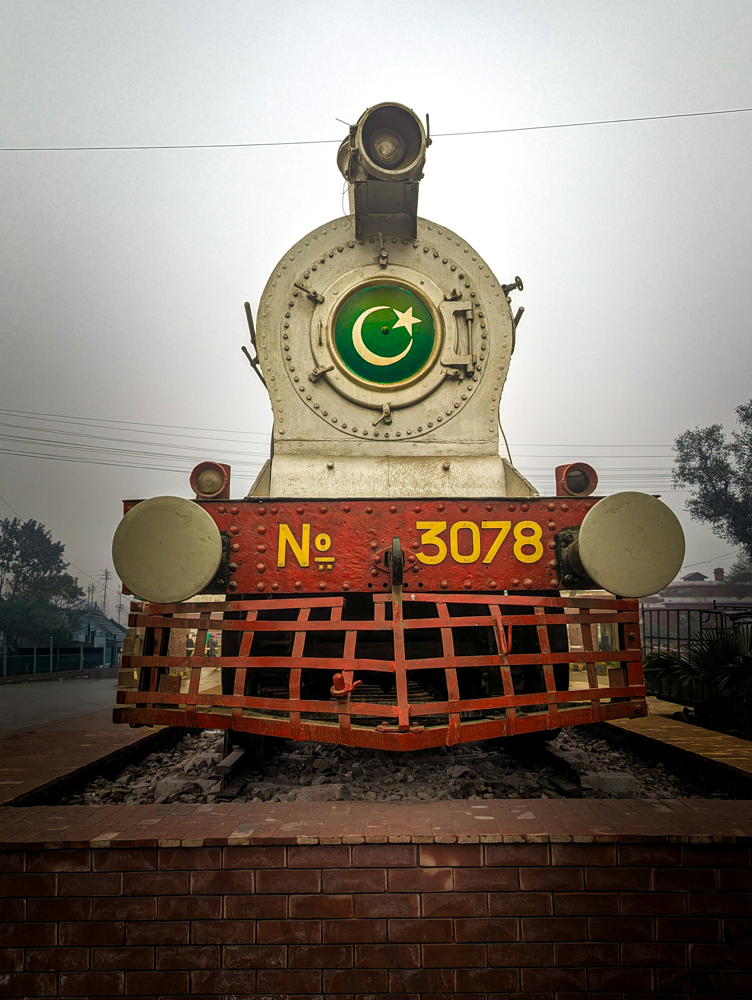

Pakistan Flag - Britannica
Pakistan is one of the most diverse and beautiful countries in the world. From the towering peaks of the Karakoram Range to the golden beaches of Karachi, Pakistan offers breathtaking landscapes, a rich history, and a warm, welcoming culture. Every region has its own language, food, and traditions that make it unique. Official Government of Pakistan
The country is home to some of the world's oldest civilizations, including the Indus Valley Civilization. Today, Pakistan is a nation of over 220 million people who share a deep pride in their heritage. Learn more on Wikipedia
Pakistan is more than a country — it is a feeling. Whether you are Pakistani or learning about it for the first time, I hope this site gives you a small window into its beauty. Use the links above to explore each topic. Pakistan Tourism Official Site